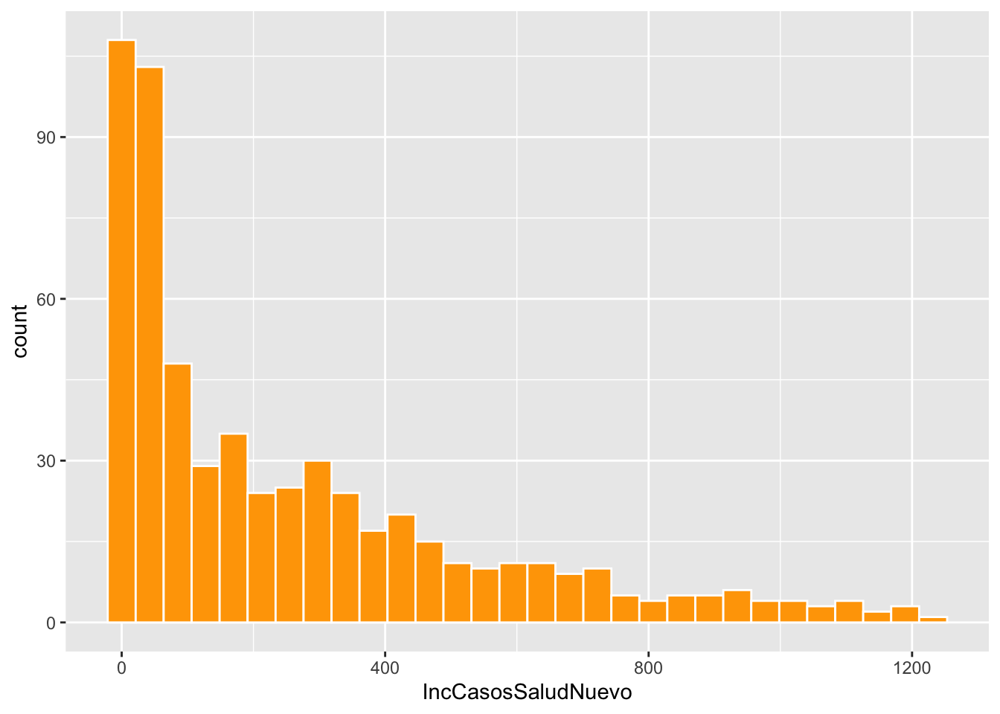
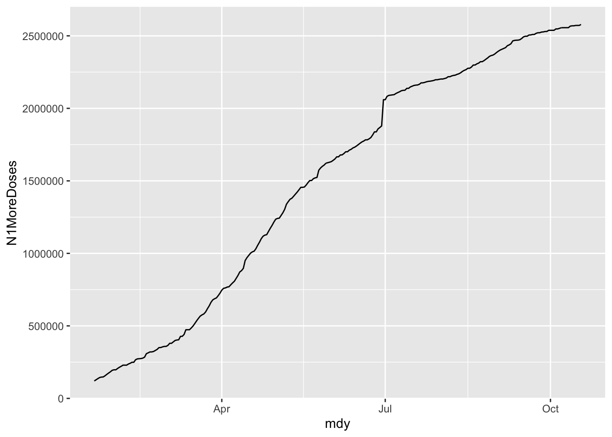

Ejercicios_Analisis_Explo
RLT
3/15/2021
Fecha de la ultima revisión
El tema proviene de los siguientes sitios.
English: https://r4ds.had.co.nz/factors.html
Español: https://es.r4ds.hadley.nz/factores.html
SE ASUME QUE LEO Y HIZO LOS EJERCICIO DEL CAPITULO 7, DEL LIBRO
Los ejercicios aqui se basan en parte de la información en el capitulo y lo aprendido en la clase. En los siguientes ejercicio usar el data set de COVID_PR que utilizamos en los trabajos anteriores (tiene que poner su data set al dia). Tiene que enseñar los scripts. Enviar el trabajo por Edmodo en formato .html.
Cada estudiante tiene que subir su trabajo a Edmodo
library(ggplot2)
library(tidyverse)Recuerda buscar el data set nuevo al dia de hoy.
library(readr)
url_COVID_PR <- read_csv("Datos/url_COVID_PR.csv")
head(url_COVID_PR)## # A tibble: 6 x 18
## X1 Fecha Muertes IncrementoMuertes CasosPCR_Salud IncCasosPCR_Salud
## <dbl> <chr> <dbl> <dbl> <dbl> <dbl>
## 1 1 3/12/20 0 0 NA NA
## 2 2 3/13/20 0 0 NA NA
## 3 3 3/14/20 0 0 NA NA
## 4 4 3/15/20 0 0 NA NA
## 5 5 3/16/20 0 0 NA NA
## 6 6 3/17/20 0 0 NA NA
## # … with 12 more variables: CasosSaludNuevo <dbl>, IncCasosSaludNuevo <dbl>,
## # HospitCOV19 <dbl>, CamasICU <dbl>, CamasICU_disp <dbl>, Ventiladores <dbl>,
## # MuertesSalud <dbl>, IncMueSalud <dbl>, VacDoses <dbl>, VacAdm <dbl>,
## # N1MoreDoses <dbl>, N2Doses <dbl>tail(url_COVID_PR)## # A tibble: 6 x 18
## X1 Fecha Muertes IncrementoMuertes CasosPCR_Salud IncCasosPCR_Salud
## <dbl> <chr> <dbl> <dbl> <dbl> <dbl>
## 1 363 3/9/21 2067 1 93951 58
## 2 364 3/10/21 2071 4 93983 32
## 3 365 3/11/21 2073 2 94336 353
## 4 366 3/12/21 2077 4 94456 120
## 5 367 3/13/21 2077 0 94642 186
## 6 368 3/14/21 2080 3 94790 148
## # … with 12 more variables: CasosSaludNuevo <dbl>, IncCasosSaludNuevo <dbl>,
## # HospitCOV19 <dbl>, CamasICU <dbl>, CamasICU_disp <dbl>, Ventiladores <dbl>,
## # MuertesSalud <dbl>, IncMueSalud <dbl>, VacDoses <dbl>, VacAdm <dbl>,
## # N1MoreDoses <dbl>, N2Doses <dbl>1. EJERCICIO (5 puntos)
Haga un histograma de la cantidad de casos de Covid-19 por dia, la columna “IncCasosSaludNuevo”. - añadir una linea blanca alrededor de las columnas - cambiar el color de las barras - Añadir leyendas en y y x con sean más apropiadas
ggplot(url_COVID_PR, aes(IncCasosSaludNuevo)) +
geom_histogram(colour = "white", fill="orange")
2. EJERCICIO (5 puntos)
Añadir una nueva columna al data frame del dia de la semana y enseña los valores de esta de esta columna. Puede usar la libreria “lubridate” con la función wday, recuerda que tiene que convertir la columna anteriormente a fecha.
library(lubridate)
url_COVID_PR$mdy=mdy(url_COVID_PR$Fecha)
url_COVID_PR$weekday=wday(url_COVID_PR$mdy)
url_COVID_PR$weekday## [1] 5 6 7 1 2 3 4 5 6 7 1 2 3 4 5 6 7 1 2 3 4 5 6 7 1 2 3 4 5 6 7 1 2 3 4 5 6
## [38] 7 1 2 3 4 5 6 7 1 2 3 4 5 6 7 1 2 3 4 5 6 7 1 2 3 4 5 6 7 1 2 3 4 5 6 7 1
## [75] 2 3 4 5 6 7 1 2 3 4 5 6 7 1 2 3 4 5 6 7 1 2 3 4 5 6 7 1 2 3 4 5 6 7 1 2 3
## [112] 4 5 6 7 1 2 3 4 5 6 7 1 2 3 4 5 6 7 1 2 3 4 5 6 7 1 2 3 4 5 6 7 1 2 3 4 5
## [149] 6 7 1 2 3 4 5 6 7 1 2 3 4 5 6 7 1 2 3 4 5 6 7 1 2 3 4 5 6 7 1 2 3 4 5 6 7
## [186] 1 2 3 4 5 6 7 1 2 3 4 5 6 7 1 2 3 4 5 6 7 1 2 3 4 5 6 7 1 2 3 4 5 6 7 1 2
## [223] 3 4 5 6 7 1 2 3 4 5 6 7 1 2 3 4 5 6 7 1 2 3 4 5 6 7 1 2 3 4 5 6 7 1 2 3 4
## [260] 5 6 7 1 2 3 4 5 6 7 1 2 3 4 5 6 7 1 2 3 4 5 6 7 1 2 3 4 5 6 7 1 2 3 4 5 6
## [297] 7 1 2 3 4 5 6 7 1 2 3 4 5 6 7 1 2 3 4 5 6 7 1 2 3 4 5 6 7 1 2 3 4 5 6 7 1
## [334] 2 3 4 5 6 7 1 2 3 4 5 6 7 1 2 3 4 5 6 7 1 2 3 4 5 6 7 1 2 3 4 5 6 7 13. EJERCICIO (5 puntos)
Haz un gráfico del promedio de nuevos casos (IncCasosSaludNuevo) por el día de la semana.
- añadir una linea blanca alrededor de las columnas
- cambiar el color de las barras
- Añadir leyendas en y y x con sean más apropiadas
df=url_COVID_PR %>%
select(IncCasosSaludNuevo,weekday) %>%
group_by(weekday) %>%
drop_na () %>%
summarize(meanCV=mean(IncCasosSaludNuevo))
df## # A tibble: 7 x 2
## weekday meanCV
## <dbl> <dbl>
## 1 1 34.9
## 2 2 361.
## 3 3 342.
## 4 4 338.
## 5 5 306.
## 6 6 302.
## 7 7 128.ggplot(df, aes(weekday, meanCV)) +
geom_col(colour = "white", fill="orange")4. Ejercicio (5 puntos)
Hacer una gráfica de linea (geom_line) del número de persona que han recibido su primera vacuna en Puerto Rico, “N1MoreDoses”.
- Nota que debería estar el eje de x, la fecha
- remover del análisis las fechas que no tienen vacunas (enseñar el script que uso para lograrlo)
names(url_COVID_PR)## [1] "X1" "Fecha" "Muertes"
## [4] "IncrementoMuertes" "CasosPCR_Salud" "IncCasosPCR_Salud"
## [7] "CasosSaludNuevo" "IncCasosSaludNuevo" "HospitCOV19"
## [10] "CamasICU" "CamasICU_disp" "Ventiladores"
## [13] "MuertesSalud" "IncMueSalud" "VacDoses"
## [16] "VacAdm" "N1MoreDoses" "N2Doses"
## [19] "mdy" "weekday"url_COVID_PR %>%
drop_na() %>%
ggplot(aes(mdy,N1MoreDoses)) +
geom_line( ) ***
5. EJERCICIO (5 puntos)
Usando la misma información anterior haga un analisis del % de personas vacunadas en Puerto Rico. - Asume que la población total de Puerto Rico es 2,810,607 - Deberia enseñar como cambia el % de personas vacunas en tiempo
url_COVID_PR %>%
drop_na(VacAdm) %>%
ggplot(aes(mdy,VacAdm/2810607)) +
geom_line( ) ***
***
BONO (5 puntos)
En la misma gráfica anterior, añade el porcentaje de personas que han recibido su segunda vacuna, “N2Doses”.
- Deberían tener dos lineas, una para la primera vacuna y la para las dos vacunas.
- Cambie el nombre de los ejes para identificar correctamente la información.
url_COVID_PR %>%
drop_na(N1MoreDoses) %>%
ggplot(aes(mdy,N1MoreDoses/2810607)) +
geom_line() +
geom_line(aes(mdy,N2Doses/2810607))```